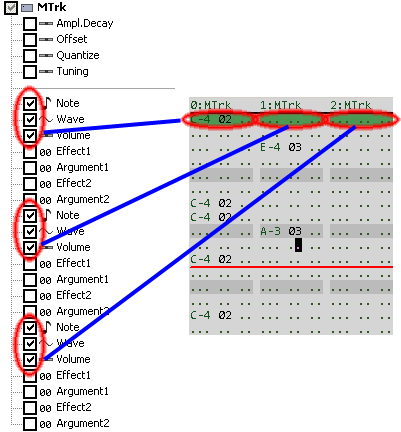

Pattern Format View

A pattern format relates plugin parameters with pattern columns.
The pattern format view has a few elements:
The pattern format dropdown shows a list of all pattern formats in the current project.
Type the beginning of the name of a plugin and/or parameter in the filter textboxes to show only the interesting parameters.
The plugin parameter list shows list of all the plugins and parameters with a checkbox next to each parameter.
The checkbox toggles visibility of the parameter in the currently selected pattern format.
Working with pattern formats
- Any plugin parameter can be part of a pattern format.
- Unchecking a pattern format column will remove the column and its values from all patterns.
- To create a pattern format with nested patterns, check the Trigger and/or Transpose parameter on instances of the Pattern Player plugin.
- Bring up the pattern format view from the pattern editor with shift+F2, or right+click inside the pattern editor and choose "Pattern Format Editor" or from the main menu View -> "Pattern Format Editor".
- Track parameters are automatically added and removed from the current format when changing the number of tracks (voices) from the pattern editor.